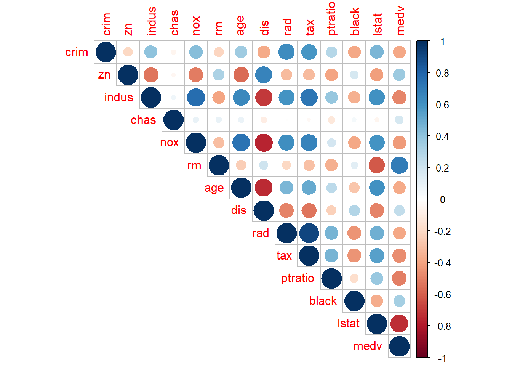

9.2 Censoring
In the case of censoring, the values of the dependent variable are reported at a certain point if they are above or below a certain value.
bhat_real = lm(y_real~x,data=censoring)
bhat_censored = lm(y_obs~x,data=censoring)
plot(censoring$x,censoring$y_real)
points(censoring$x,censoring$y_obs,pch=19)
abline(bhat_real,col=c("darkgreen"))
abline(bhat_censored,col=c("red"))
If all data was reported at the correct value, the following following regression model could be executed:
##
## Call:
## lm(formula = y_real ~ x, data = censoring)
##
## Residuals:
## Min 1Q Median 3Q Max
## -2.2931 -0.6692 0.1362 0.6193 3.5109
##
## Coefficients:
## Estimate Std. Error t value Pr(>|t|)
## (Intercept) -1.4382 0.2814 -5.111 5.52e-06 ***
## x 0.4535 0.0517 8.771 1.54e-11 ***
## ---
## Signif. codes: 0 '***' 0.001 '**' 0.01 '*' 0.05 '.' 0.1 ' ' 1
##
## Residual standard error: 1.086 on 48 degrees of freedom
## Multiple R-squared: 0.6158, Adjusted R-squared: 0.6078
## F-statistic: 76.94 on 1 and 48 DF, p-value: 1.542e-11Ignoring censoring leads to biased results:
##
## Call:
## lm(formula = y_obs ~ x, data = censoring)
##
## Residuals:
## Min 1Q Median 3Q Max
## -2.0289 -0.3447 -0.0029 0.3112 3.7071
##
## Coefficients:
## Estimate Std. Error t value Pr(>|t|)
## (Intercept) -0.37355 0.22851 -1.635 0.109
## x 0.30836 0.04198 7.345 2.18e-09 ***
## ---
## Signif. codes: 0 '***' 0.001 '**' 0.01 '*' 0.05 '.' 0.1 ' ' 1
##
## Residual standard error: 0.8816 on 48 degrees of freedom
## Multiple R-squared: 0.5292, Adjusted R-squared: 0.5194
## F-statistic: 53.95 on 1 and 48 DF, p-value: 2.18e-09Using the R package censReg) allows for the reduction of the bias:
##
## Call:
## censReg(formula = y_obs ~ x, data = censoring)
##
## Observations:
## Total Left-censored Uncensored Right-censored
## 50 17 33 0
##
## Coefficients:
## Estimate Std. error t value Pr(> t)
## (Intercept) -1.41595 0.38219 -3.705 0.000212 ***
## x 0.44988 0.06315 7.124 1.05e-12 ***
## logSigma 0.07785 0.12548 0.620 0.534996
## ---
## Signif. codes: 0 '***' 0.001 '**' 0.01 '*' 0.05 '.' 0.1 ' ' 1
##
## Newton-Raphson maximisation, 5 iterations
## Return code 1: gradient close to zero (gradtol)
## Log-likelihood: -58.03532 on 3 Df